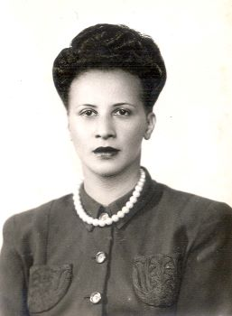

Virgínia Leone Bicudo

Virgínia Leone Bicudo foi uma socióloga e psicanalista brasileira, pioneira nos estudos sobre relações raciais e na introdução da psicanálise no Brasil. Nascida em São Paulo, em 1910, filha de uma imigrante italiana e de um descendente de negros escravizados, destacou-se por sua contribuição acadêmica e profissional.
Principais Contribuições
- Defendeu a dissertação "Estudo de atitudes raciais de pretos e mulatos em São Paulo" em 1945, sendo o primeiro trabalho de pós-graduação no Brasil a tratar de relações raciais. :contentReference[oaicite:4]{index=4}
- Foi a primeira não médica a ser reconhecida como psicanalista no país, contribuindo significativamente para a institucionalização da psicanálise no Brasil. :contentReference[oaicite:5]{index=5}
- Participou do Projeto UNESCO no Brasil, escrevendo o relatório "Atitudes dos alunos dos grupos escolares em relação com a cor dos seus colegas" em 1953. :contentReference[oaicite:6]{index=6}
- Atuou na implementação da psicanálise como um campo independente no Brasil, ajudando na criação da Sociedade Brasileira de Psicanálise de São Paulo.
- Autora de diversos artigos sobre psicanálise, psicologia social e relações raciais.
Legado e Impacto
- Foi pioneira nos estudos sobre relações raciais no Brasil, sendo referência para pesquisadores e sociólogos.
- Abriu caminho para a participação de mulheres e profissionais não médicos na psicanálise.
- Seu trabalho continua sendo estudado e valorizado no campo da psicanálise e da sociologia.
Saiba mais
Voltar